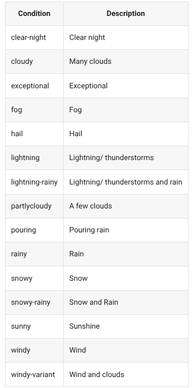

Weather
There is a set of recommended codes for weather conditions in Home Assistant weather integrations (recommended because they are included in translation files and will be displayed with the correct icon).

Some of them are challenging for TTS because of the hyphens, and Amazon Polly at least insists on rendering partlycloudy as "partlie cloudy".
You can iron out most of these problems with a short template:
# Correct text that voice assistants find hard to pronounce in weather summary
template:
- sensor:
- name: Weather voice
state: >
{% if is_state('weather.your_weather_entity', 'partlycloudy') %} # Change to ID of your weather entity
partly cloudy
{% else %}
{{ states('weather.your_weather_entity') | replace('-', ' ') }} # Change to ID of your weather entity
{% endif %}